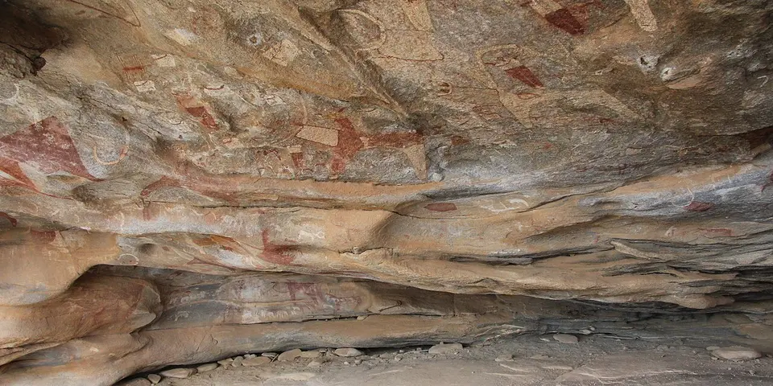

Sub-Saharan Africa
Somalia on a budget
Somaliland's 5,000-year-old cave paintings at Laas Geel are the highlight. Most of Somalia is off-limits, and even Somaliland trips are best done with a guide after checking current advice.
Photo: joepyrek, CC BY-SA 2.0, via Wikimedia Commons

Classic route
Hargeisa and Laas Geel in Somaliland. 4 days, usually with a guide.
How much 5 places in Somalia cost
Daily budgets per person in US dollars: a hostel dorm or simple guesthouse, local food, local transport and the usual entry fees.
-
Hargeisa
A bustling livestock market and money-changers with piles of cash on the street give Somaliland's capital a lively, unusual energy.
Bed $25 · Food $8 · Getting around $5 · Extras $5
Budget tip: Somaliland requires an armed escort for trips outside the city. Your hotel can arrange one, and check current travel advice first.
$43per day -
Laas Geel
Some of the best-preserved Neolithic rock paintings in Africa, with vivid cattle and figures painted under granite overhangs.
Bed $25 · Food $8 · Getting around $20 · Extras $10
Budget tip: Visited as a day trip from Hargeisa. Arrange the required permit and escort through your hotel or a local guide.
$63per day -
Berbera
An old Ottoman-era port with crumbling coral-stone houses and long, empty beaches on the Gulf of Aden.
Bed $25 · Food $8 · Getting around $10 · Extras $5
Budget tip: Visit only with a local fixer, and check current advice for Somaliland before making any plans.
$48per day -
Sheikh
A cool mountain town above a winding pass on the road from Berbera to Burao.
Bed $25 · Food $8 · Getting around $10 · Extras $3
Budget tip: Visit with a local fixer, and check current travel advice before going.
$46per day -
Zeila
Ancient Somaliland port near Djibouti with coral-stone ruins, old mosques, offshore islands and turquoise shallows once part of the Adal trade.
Bed $25 · Food $8 · Getting around $20 · Extras $5
Budget tip: Check current travel advisories and Somaliland permit rules first. Hire a car with a driver and armed escort if required from Hargeisa or Borama.
$58per day
Know before you go
Somalia on a budget: the basics
Currency
$1 = 572 SOS
Somali shilling
| Dollars to SOS | SOS to dollars | ||
|---|---|---|---|
| $1 | 572 SOS | 100 SOS | $0.175 |
| $5 | 2,858 SOS | 500 SOS | $0.875 |
| $10 | 5,715 SOS | 1,000 SOS | $1.75 |
| $20 | 11,430 SOS | 5,000 SOS | $8.75 |
| $50 | 28,576 SOS | 10,000 SOS | $17.50 |
| $100 | 57,151 SOS | 50,000 SOS | $87.49 |
A typical day here (about $48) is roughly 27,000 SOS.
Mid-market rate on 2026-10-05. Cash machines and exchange desks pay a little less.
Getting around
In Somaliland, travel outside Hargeisa, including to Laas Geel, has generally required an armed police escort, so most visitors book a local guide and driver. Within Hargeisa, taxis are cheap. Check current advice before any plans.
Where to sleep
There are no hostels, so visitors stay in hotels in Hargeisa, many arranged through guides.
What to eat
- Canjeero: spongy flatbread eaten at breakfast
- Bariis iskukaris: spiced rice with meat
- Camel milk: fresh or slightly soured, a local favorite
- Shaah: sweet spiced tea
Money
Somaliland uses its own shilling, but US dollars and mobile money like ZAAD are widely used. Bring clean dollar notes, since ATMs for foreign cards are rare.
Phone data
Telesom SIMs are cheap in Somaliland with a passport, and coverage is good in towns.
Heads up
Dress modestly and respect local customs, especially around prayer times.
Somalia travel: quick answers
How much does a day in Somalia cost on a budget?
About $48 a day for one person, from $43 in Hargeisa to $63 in Laas Geel. That covers a hostel dorm or simple guesthouse, local food, local transport and the usual entry fees, so a week runs about $336 before flights.
When is the best time to visit Somalia?
November to March is the best time, with the most reliable weather for getting around.
What is the cheapest place to visit in Somalia?
Hargeisa, at about $43 a day. A bustling livestock market and money-changers with piles of cash on the street give Somaliland's capital a lively, unusual energy.
How long do you need in Somalia?
Hargeisa and Laas Geel in Somaliland. 4 days, usually with a guide.
How much is $1 in Somalia?
One US dollar is about 572 Somali shilling (SOS), going by the mid-market rate on 2026-10-05. So $20 is roughly 11,430 SOS, and a typical budget day of $48 comes to about 27,000 SOS.
How do you get around Somalia cheaply?
In Somaliland, travel outside Hargeisa, including to Laas Geel, has generally required an armed police escort, so most visitors book a local guide and driver. Within Hargeisa, taxis are cheap. Check current advice before any plans.
What food should you try in Somalia?
Canjeero, spongy flatbread eaten at breakfast. Bariis iskukaris, spiced rice with meat. Camel milk, fresh or slightly soured, a local favorite. Shaah, sweet spiced tea.
Is it safe to travel to Somalia?
Most governments advise against all travel to Somalia because of terrorism, kidnapping and armed conflict. Self-declared Somaliland is generally considered calmer, but check current advice. Check your government's current travel advice before planning a trip.
Planning around the seasons? See where to go in November, or compare the cheapest countries nearby.
Similar budgets nearby
- Angola $48/day
- Mauritius $50/day
- Cape Verde $45/day
- South Africa $52/day